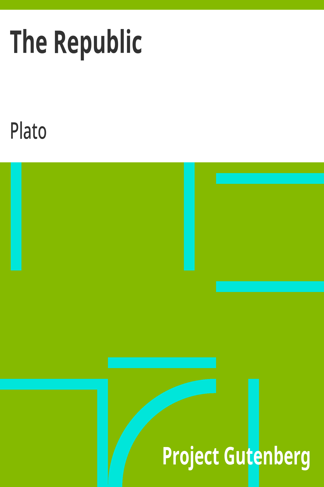

The Republic (Jowett translation)
الجمهورية
الفلسفة
ملك عام
ترجمة كاملة
جمهورية أفلاطون الكاملة في عشرة كتب: حوار سقراط عن العدالة والمدينة الفاضلة، جوف النفس، الملك الفيلسوف، الكهف، نقد الشعر والمحاكاة، حظوظ النفس خالدة — الترجمة الكاملة لأساس الفلسفة السياسية الغربية.
| المؤلف | أفلاطون (ترجمة بنجامين جويت) — Plato (translated by Benjamin Jowett) |
| سنة النص الأصلي | ٣٧٥ ق.م |
| كلمات المصدر (الإنجليزية) | ١٨٠٢٩٧ |
| كلمات الترجمة (العربية) | ١٥٨٤٧٣ |
| مقاطع الترجمة المدققة | ١٢٣ |
| مدة القراءة التقريبية | ≈ ٣٦٠٠ دقيقة |
الترخيص والحقوق: النص الأصلي (ترجمة جويت) في الملك العام (غوتنبرغ #1497). هذه الترجمة العربية منشورة بإذن حر.